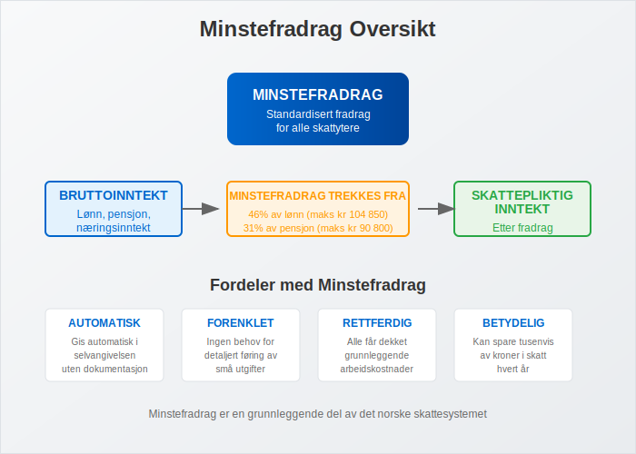
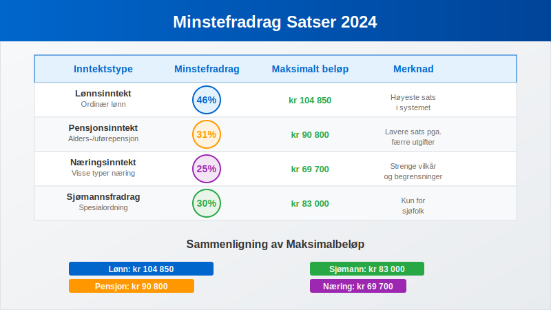
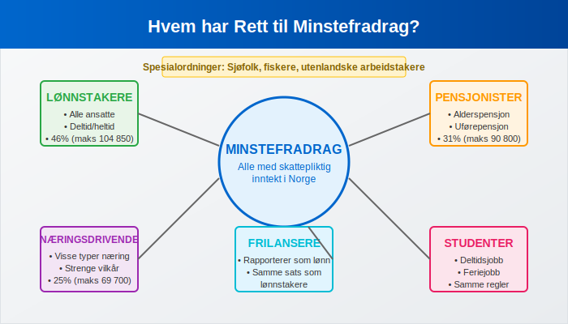
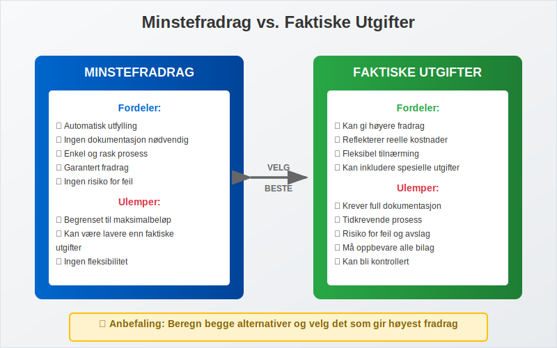
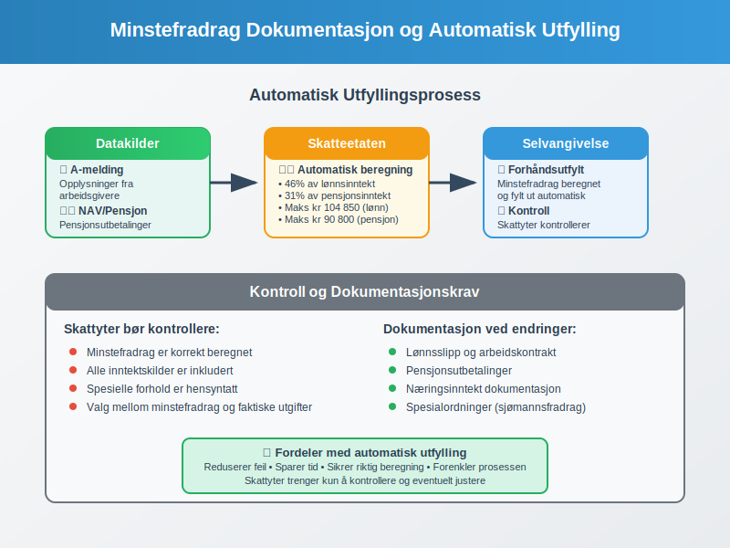
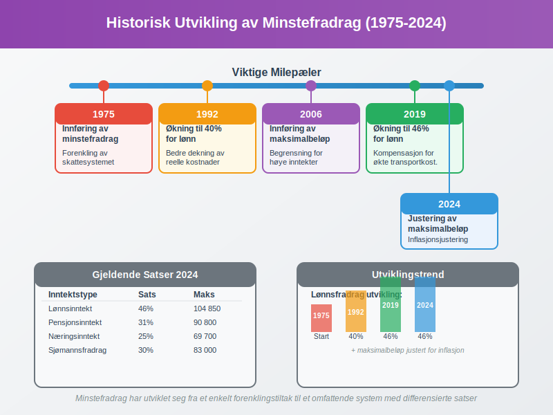
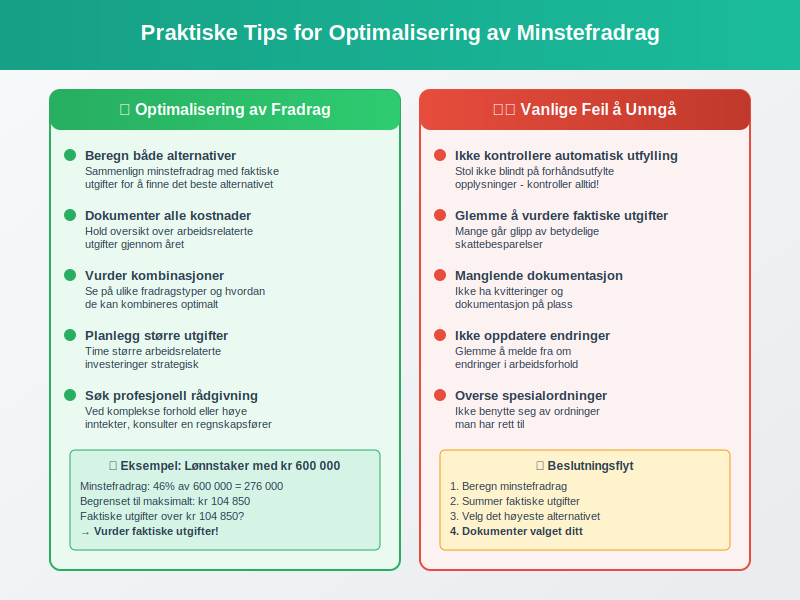
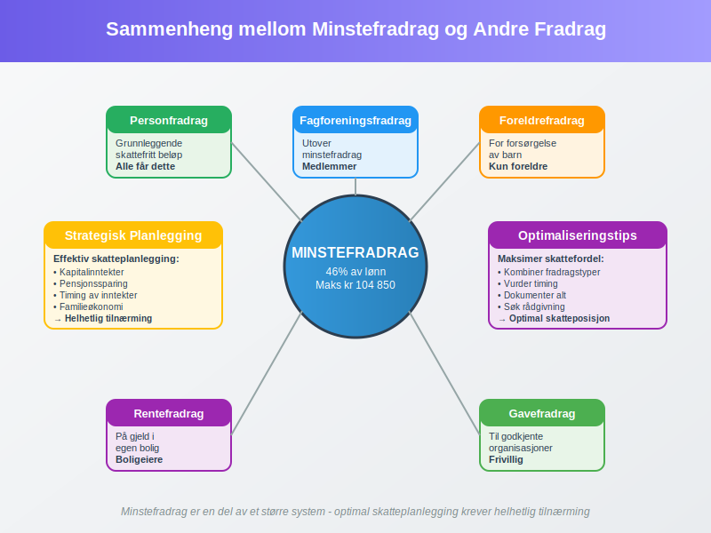

Minstefradrag er et standardisert fradrag som alle lønnstakere og pensjonister i Norge automatisk får i sin selvangivelse. Dette fradraget skal dekke de vanligste utgiftene knyttet til arbeid og inntektserverv, og utgjør en viktig del av det norske skattesystemet.
For en komplett gjennomgang av personfradrag, se Personfradrag.
Hva er Minstefradrag?
Minstefradrag er et fast beløp som trekkes fra bruttoinntekten før skatt beregnes. Det er innført for å forenkle skattesystemet og sikre at alle får dekket grunnleggende kostnader knyttet til arbeid uten å måtte dokumentere hver enkelt utgift.

Formålet med Minstefradrag
Minstefradragets hovedformål er å:
- Forenkle skatteberegningen for vanlige lønnstakere
- Dekke standardkostnader knyttet til arbeid
- Redusere behovet for detaljert dokumentasjon av mindre arbeidsrelaterte utgifter
- Sikre rettferdig behandling av alle skattytere
Gjeldende Satser for Minstefradrag 2024
Minstefradragssatsene justeres årlig og varierer basert på inntektstype og -nivå. Tabellen nedenfor viser gjeldende satser for 2024:

| Inntektstype | Minstefradrag | Maksimalt beløp | Merknad |
|---|---|---|---|
| Lønnsinntekt | 46% | kr 104 850 | Gjelder ordinær lønn |
| Pensjonsinntekt | 31% | kr 90 800 | Alderspensjon, uførepensjon |
| Næringsinntekt | 25% | kr 69 700 | Kun for visse typer næring |
| Sjømannsfradrag | 30% | kr 83 000 | Spesialordning for sjøfolk |
Beregningseksempler
Eksempel 1: Vanlig lønnstaker En person med årslønn på kr 500 000 får minstefradrag på:
- 46% av kr 500 000 = kr 230 000
- Begrenset til maksimalt kr 104 850
- Faktisk minstefradrag: kr 104 850
Eksempel 2: Pensjonist En pensjonist med årlig pensjon på kr 300 000 får:
- 31% av kr 300 000 = kr 93 000
- Begrenset til maksimalt kr 90 800
- Faktisk minstefradrag: kr 90 800
Hvem har Rett til Minstefradrag?
Minstefradrag gis automatisk til alle som har skattepliktig inntekt i Norge, men størrelsen varierer basert på inntektstype og personlige forhold.

Kategorier som får Minstefradrag
- Lønnstakere - alle med lønnsinntekt
- Pensjonister - mottakere av alderspensjon og uførepensjon
- Selvstendig næringsdrivende - med visse begrensninger
- Frilansere - som rapporterer inntekt som lønn
- Studenter - med deltids- eller feriejobb
Spesielle Regler
Enkelte grupper har spesielle regler for minstefradrag:
- Sjøfolk får høyere satser gjennom sjømannsfradraget
- Fiskere har egne regler for næringsfradrag
- Utenlandske arbeidstakere kan ha begrensninger
- Deltidsansatte får forholdsmessig fradrag
Minstefradrag vs. Faktiske Utgifter
En viktig beslutning mange skattytere må ta er om de skal benytte minstefradrag eller dokumentere faktiske utgifter. Dette valget kan ha betydelig økonomisk konsekvens.

Når Lønner det seg med Faktiske Utgifter?
Det kan være lønnsomt å velge faktiske utgifter når:
- Reisekostnader til arbeid overstiger minstefradrag
- Hjemmekontor-utgifter er betydelige
- Faglige kurs og utdanning koster mye
- Arbeidsklær og verktøy er dyrt
- Fagforeningskontingent og yrkeslitteratur summerer seg
Sammenligning av Alternativer
| Utgiftstype | Minstefradrag | Faktiske utgifter | Anbefaling |
|---|---|---|---|
| Lav reiseavstand | kr 104 850 | kr 30 000 | Bruk minstefradrag |
| Lang reiseavstand | kr 104 850 | kr 150 000 | Bruk faktiske utgifter |
| Hjemmekontor | kr 104 850 | kr 120 000 | Bruk faktiske utgifter |
| Vanlig kontorjobb | kr 104 850 | kr 80 000 | Bruk minstefradrag |
Dokumentasjon og Rapportering
Selv om minstefradrag gis automatisk, er det viktig å forstå hvordan det rapporteres og dokumenteres i selvangivelsen.
Automatisk Utfylling
Skatteetaten fyller automatisk ut minstefradrag basert på:
- Opplysninger fra arbeidsgivere via a-meldingen
- Pensjonsutbetalinger fra NAV og private ordninger
- Tidligere års oppgaver og registrerte forhold

Kontroll og Endringer
Skattytere bør alltid kontrollere at:
- Minstefradrag er korrekt beregnet
- Alle inntektskilder er inkludert
- Spesielle forhold er hensyntatt
- Valg mellom minstefradrag og faktiske utgifter er optimalt
Minstefradrag for Ulike Inntektstyper
Forskjellige inntektstyper har ulike regler for minstefradrag, noe som gjenspeiler de forskjellige kostnadene knyttet til ulike former for inntektserverv.
Lønnsinntekt
For lønnsinntekt gjelder den høyeste satsen på 46% opp til maksimalt kr 104 850. Dette skal dekke:
- Transport til og fra arbeid
- Arbeidsklær og verktøy
- Fagforeningskontingent
- Yrkeslitteratur og kurs
- Andre arbeidsrelaterte utgifter
Pensjonsinntekt
Pensjonister får 31% i minstefradrag, maksimalt kr 90 800. Den lavere satsen reflekterer at pensjonister har færre arbeidsrelaterte utgifter.
Næringsinntekt
For næringsinntekt er minstefradraget begrenset til 25%, maksimalt kr 69 700. Dette gjelder kun visse typer næring og har strenge vilkår.
Historisk Utvikling av Minstefradrag
Minstefradrag har gjennomgått betydelige endringer siden innføringen, både i satser og struktur.

Viktige Milepæler
| År | Endring | Betydning |
|---|---|---|
| 1975 | Innføring av minstefradrag | Forenkling av skattesystemet |
| 1992 | Økning til 40% for lønn | Bedre dekning av reelle kostnader |
| 2006 | Innføring av maksimalbeløp | Begrensning av fradrag for høye inntekter |
| 2019 | Økning til 46% for lønn | Kompensasjon for økte transportkostnader |
| 2024 | Justering av maksimalbeløp | Inflasjonsjustering |
Internasjonale Sammenligninger
Norge har et relativt sjenerøst minstefradragssystem sammenlignet med andre land.
Sammenligning med Naboland
| Land | Minstefradrag | Maksimalt beløp | Kommentar |
|---|---|---|---|
| Norge | 46% (lønn) | kr 104 850 | Høyest i Norden |
| Sverige | Fast beløp | SEK 13 540 | Lavere nivå |
| Danmark | 5,1% | DKK 25 900 | Betydelig lavere |
| Finland | Fast beløp | EUR 750 | Svært begrenset |
Praktiske Tips og Råd
For å optimalisere skattefordelen av minstefradrag, bør skattytere vurdere følgende:

Optimalisering av Fradrag
- Beregn både minstefradrag og faktiske utgifter
- Dokumenter alle arbeidsrelaterte kostnader
- Vurder kombinasjoner av ulike fradragstyper
- Planlegg større utgifter strategisk
- Søk profesjonell rådgivning ved komplekse forhold
Vanlige Feil å Unngå
- Ikke kontrollere automatisk utfylte opplysninger
- Glemme å vurdere faktiske utgifter
- Manglende dokumentasjon av spesielle forhold
- Ikke oppdatere endringer i arbeidsforhold
- Overse spesialordninger man har rett til
Fremtidige Endringer og Utviklingstrekk
Minstefradragssystemet er under kontinuerlig vurdering og kan endres basert på samfunnsutvikling og politiske prioriteringer.
Forventede Utviklingstrekk
- Digitalisering av dokumentasjon og rapportering
- Automatisering av fradragsberegninger
- Tilpasning til nye arbeidsformer som hjemmekontor
- Miljøhensyn i transportfradrag
- Forenkling av regelverk
Sammenheng med Andre Fradrag
Minstefradrag må sees i sammenheng med andre fradrag i skattesystemet for optimal skatteplanlegging.

Komplementære Fradrag
- Personfradrag - grunnleggende skattefritt beløp
- Foreldrefradrag - for forsørgelse av barn
- RenteFradrag - på gjeld i egen bolig
- Gavefradrag - til godkjente organisasjoner
- Fagforeningsfradrag - utover minstefradrag
Strategisk Planlegging
Effektiv skatteplanlegging krever forståelse av hvordan minstefradrag samvirker med:
- Kapitalinntekter og deres beskatning
- Pensjonssparing og skattefordeler
- Timing av inntekter og utgifter
- Familieøkonomi og inntektsfordeling
Konklusjon
Minstefradrag er en fundamental del av det norske skattesystemet som sikrer at alle skattytere får dekket grunnleggende kostnader knyttet til inntektserverv. Med en sats på 46% for lønnsinntekt, opptil kr 104 850, representerer det en betydelig skattefordel for de fleste nordmenn.
For å maksimere skattefordelen er det viktig å:
- Forstå hvordan minstefradrag beregnes
- Sammenligne med faktiske utgifter
- Dokumentere alle relevante kostnader
- Planlegge strategisk for optimal skatteposisjon
Ved å ha god kunnskap om minstefradrag og dets sammenheng med andre deler av skattesystemet, kan skattytere sikre at de får maksimal nytte av de fradragene de har rett til.